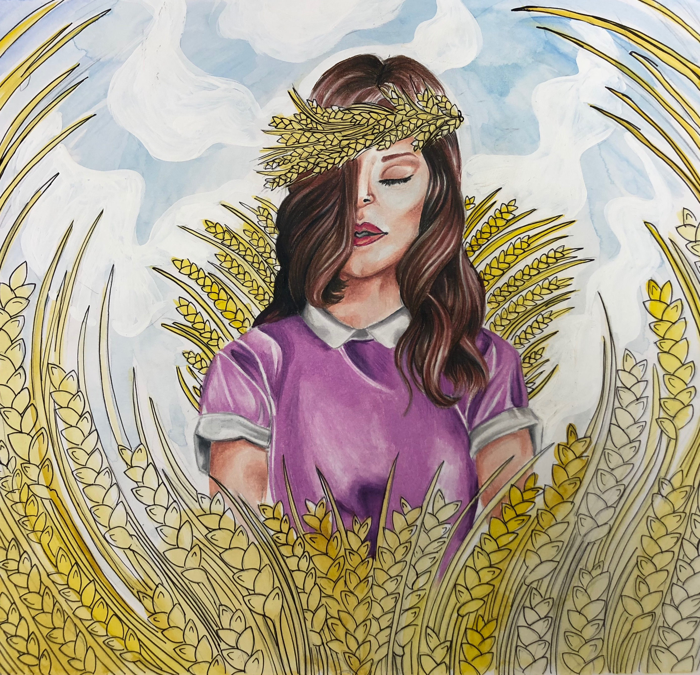
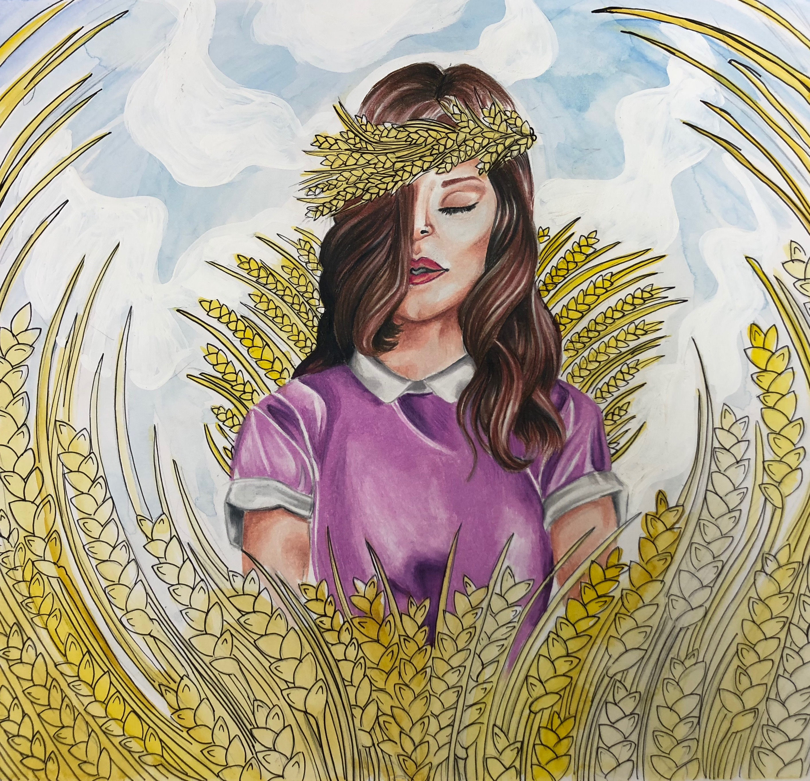
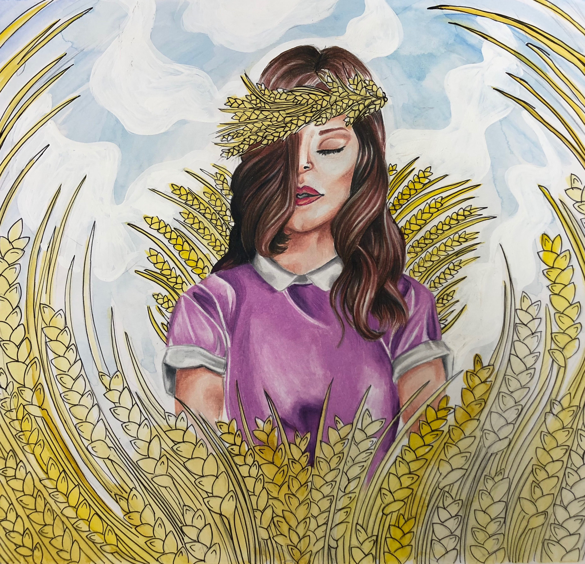
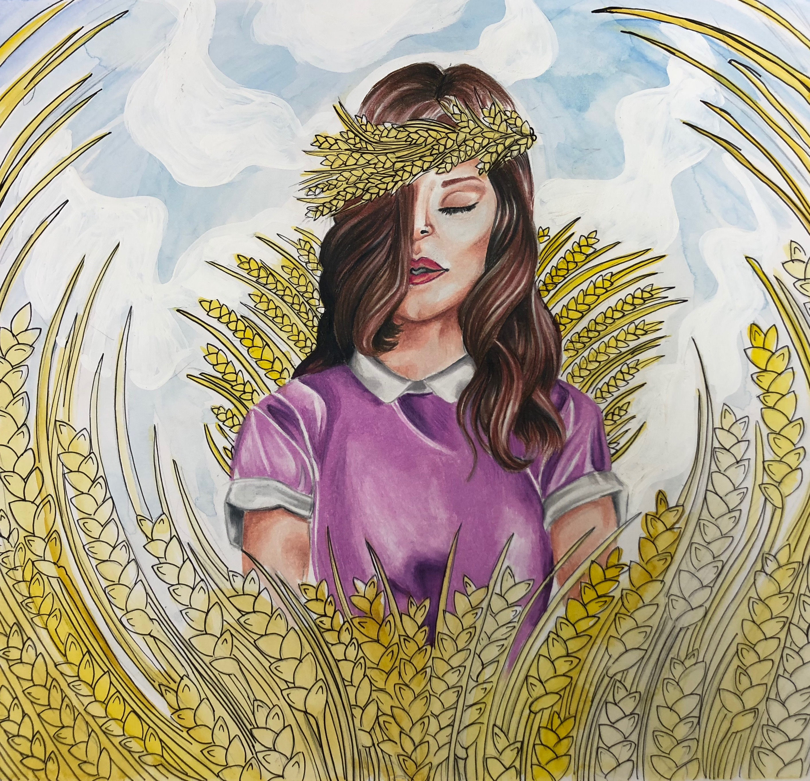
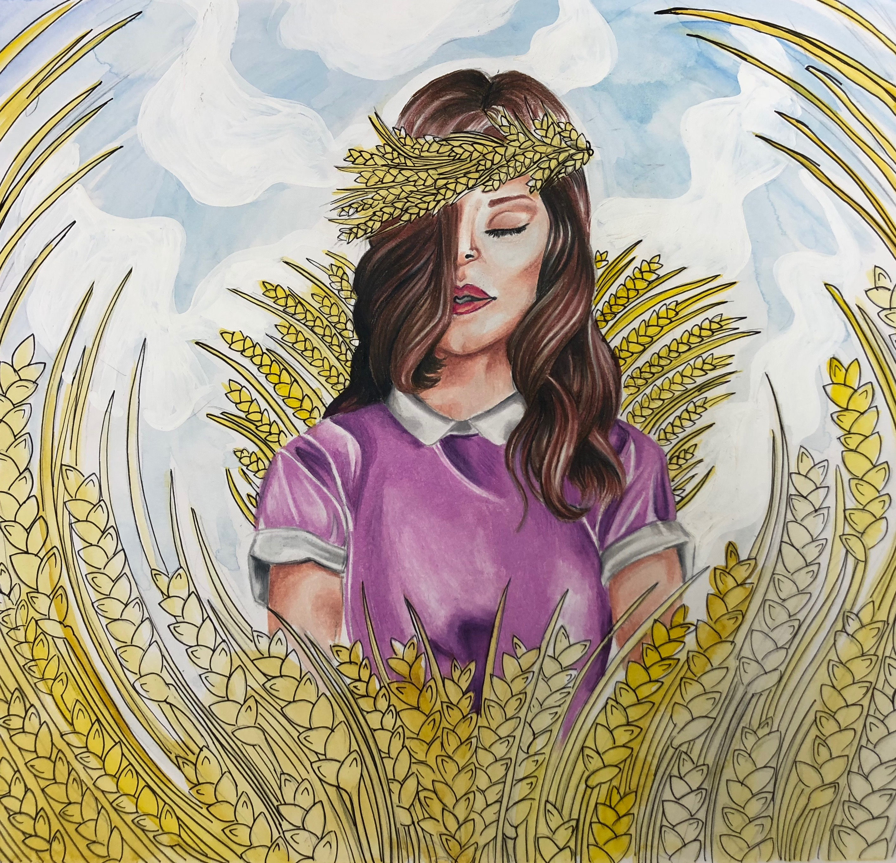

Portfolio
About
Resume
Projects
Traditional Media
materials used: Prismacolor pencils, micron pen, watercolor, acrylic paint

Digital Media
program(s) used: Adobe Illustrato, Adobe Photoshop


 


